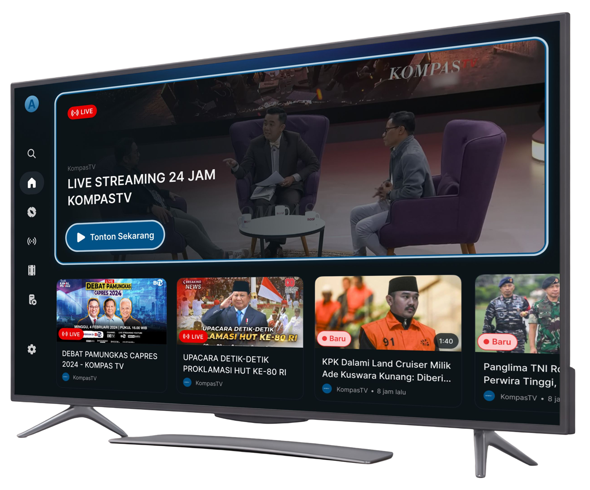
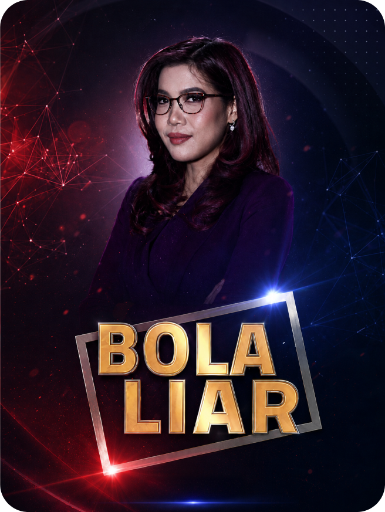
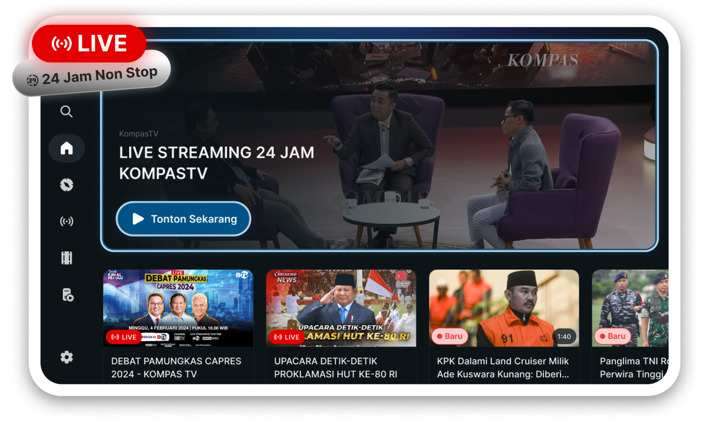
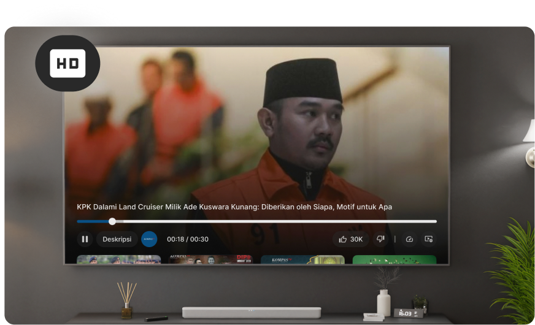
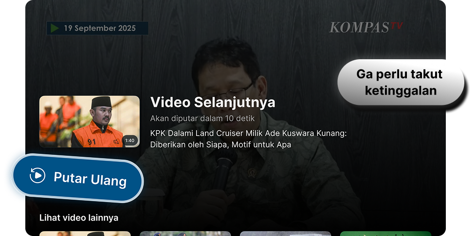
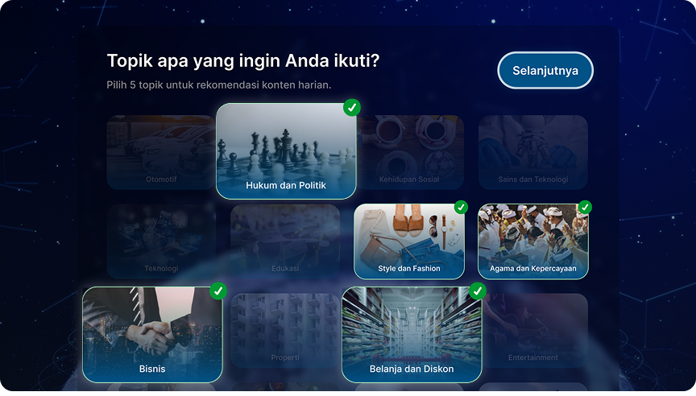
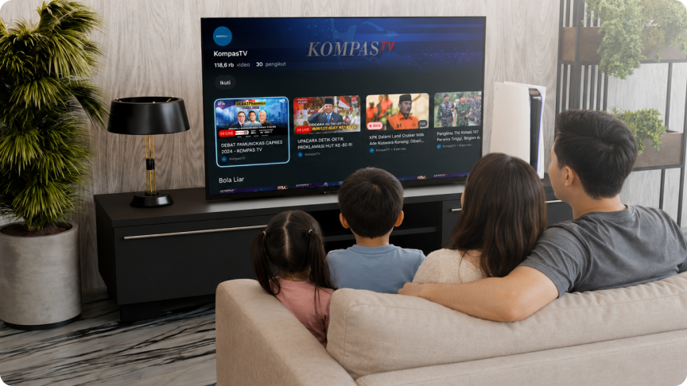
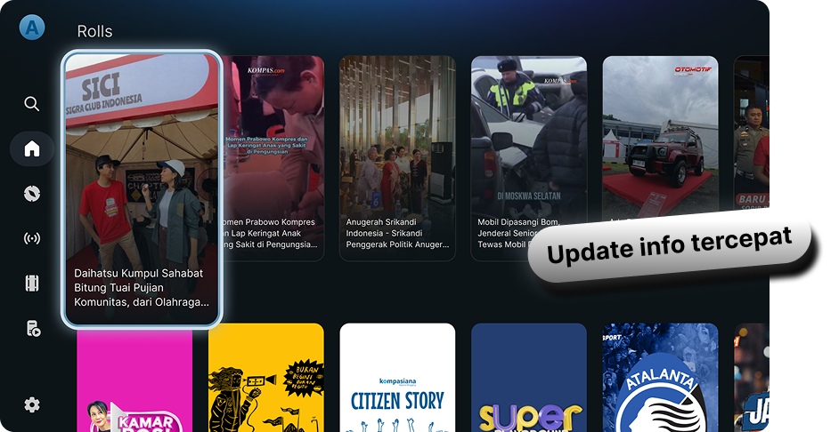
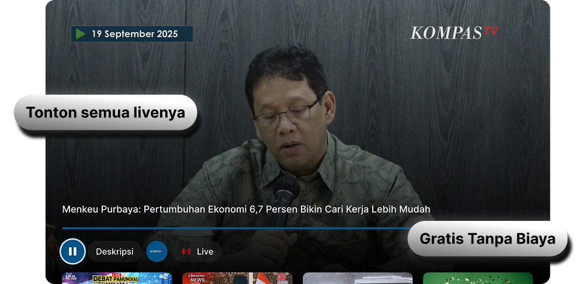

ROSI
Ruang Opini, Sumber Informasi — dipandu oleh Rosiana Silalahi, Frisca Clarissa, dan Thifal Solesa.
Baru di Smart TV
Tonton siaran langsung dan ribuan tayangan Kompas TV. Gratis, ringan, langsung jalan.

Program Unggulan
Tonton selengkapnya, kapan pun Anda mau, di layar yang sepadan dengan kualitasnya.
Ruang Opini, Sumber Informasi — dipandu oleh Rosiana Silalahi, Frisca Clarissa, dan Thifal Solesa.
Investigasi Jurnalistik, menelusuri fakta lapangan dan masalah sosial secara langsung, dipandu oleh Dipo Nurbahagia.
Membahas polemik di tengah masyarakat bersama sejumlah narasumber dipandu oleh Pemred KompasTV Yogi Nugraha.

Talkshow interaktif yang membahas berbagai isu hangat, kontroversial yang sedang menjadi perbincangan publik, dipandu oleh Silviona Tarigan.
…dan pilihan program lainnya, semuanya bisa diputar ulang kapan saja.
Kenapa Nonton di Smart TV?
Dirancang untuk layar besar: teks jelas dibaca dari sofa, navigasi mudah lewat remote, nyaman ditonton bersama.
Siaran Kompas TV nonstop 24 jam dalam kualitas HD. Breaking news sampai di layar Anda tepat saat terjadi.


Grafis, peta, dan data di layar tidak lagi mengecil — semuanya terbaca nyaman dari jarak sofa.

Ribuan episode dan segmen berita tersimpan rapi. Tinggal cari, langsung tonton.

Pilih topik favorit Anda, dan biarkan Kompas TV menyajikan berita yang paling relevan setiap hari.

Satu layar untuk semua orang di ruang keluarga — bukan lagi tontonan sendiri-sendiri.

Nikmati video pendek untuk update informasi yang lebih cepat.

Tidak ada biaya bulanan, tidak perlu kartu kredit. Cukup install, langsung tonton.
Panduan Manual
Tidak sampai dua menit. Pilih cara yang paling mudah untuk Anda. Langsung di Smart TV, atau lewat Google Play dari HP/laptop, lalu ikuti langkahnya satu per satu.
Tampilan bisa sedikit berbeda tergantung model dan versi sistem TV Anda.
Pilih merek TV Anda — kami tampilkan cara installnya.
Tidak menemukan merek TV Anda? Jangan khawatir, Anda masih tetap bisa menonton siaran langsung Kompas TV di sini.